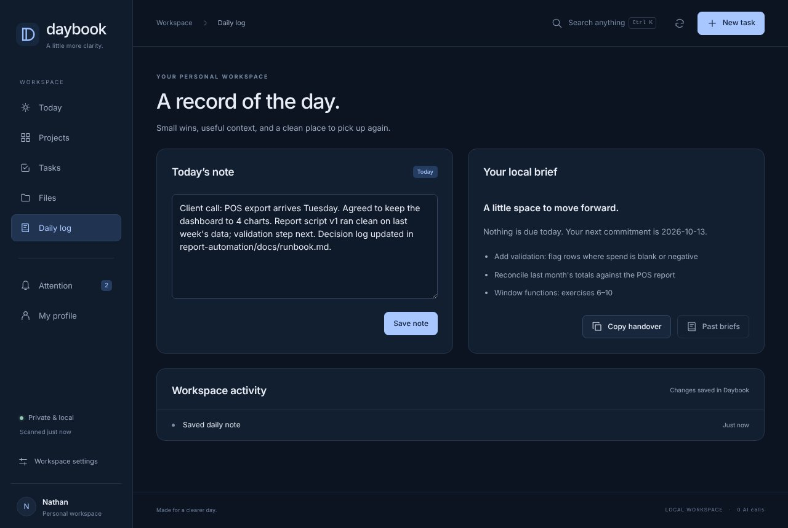
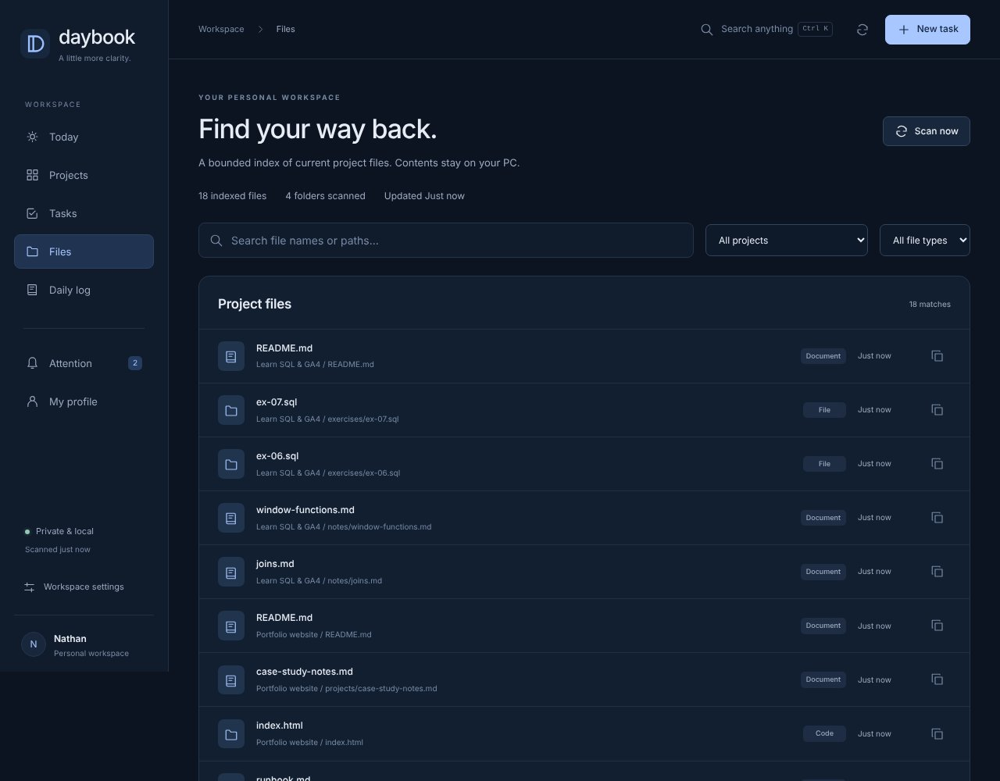

The problem
Work gets done; the record gets lost
Decisions end up in chat threads, files pile up across folders, and every time I asked an AI assistant for help I had to re-explain the whole project. The context was the expensive part — and it disappeared at the end of each day.
I wanted a workspace whose main job is keeping the record straight: written down, findable and ready to hand over.
What it keeps
Four kinds of record
- Daily log: one note per day — small wins, context, where to pick up — plus an automatic list of every change made in the workspace.
- File index: a searchable list of every file in each project folder, labelled by type, with a copy-path button. It reads file names and dates, never file contents.
- Handover: a short, structured summary of each project — next step, milestones, who it's waiting on, open tasks — ready to paste into an AI assistant or give to a colleague.
- History: every save keeps a backup (the last 20 versions), and two open windows can't silently overwrite each other.


A real output
The handover, as generated
This is what Daybook produces for one project (sample data). Note the first line: a file changing on disk is never treated as proof that work is done.
# Daybook handover Recorded plans and observed file activity are separate. Never infer completion from a file change. ## Weekly report automation (building) Apps Script that compiles ad spend and sales into one weekly summary instead of copying by hand. Next: Add the data-validation step before the summary is emailed. Milestones: 2/4 recorded complete Open tasks: - [doing] Add validation: flag rows where spend is blank or negative - [todo] Decide who receives the weekly email - [blocked] Schedule the Monday 8am run
Today view
Calm by design
The front page shows only three focus steps, upcoming dates and each project's next step. Everything else sits one click away.

Two takes
The record keeper next to the command centre
Daybook was built with ChatGPT as an alternative to my Claude-built Command Centre, and I wrote up a side-by-side comparison of the two. The Command Centre is better at live status and a written morning brief; Daybook is better at documentation, file finding and running with zero routine AI cost. I use each for what it does best.
The code is open on GitHub. Clone it and run node server.mjs to try a fictional sample workspace — my real projects and data are not in the repository.